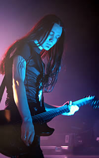
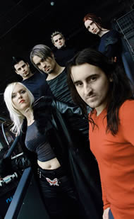

Entrevista de Vegard K. Thorsen à Cesar Dechen – Rock Online – 2002
O Theatre of Tragedy lançou seu primeiro álbum, Theatre of Tragedy, em 1995. Há alguma coisa que você considera ter sido decisiva para a carreira da banda nesse começo? Nessa época o Theatre of Tragedy era uma banda iniciante e inexperiente, o simples fato de rapidamente conseguir um contrato com uma gravadora foi muito significativo. Mas isso não é totalmente positivo, alguém já disse que uma rápida ascensão para o sucesso pode causar um grande impacto no ego da pessoa. Mas não há o que se possa fazer.
Vocês são conhecidos como a banda que iniciou o estilo de trazer o contraste entre vocais femininos limpos e masculinos guturais. Vocês criaram um novo estilo e influenciaram muitas outras bandas. Hoje vocês recriaram seu estilo, e as influências eletrônicas estão muito mais fortes que nos álbuns anteriores. Como vocês vêem a cena gótica atualmente? Está muito diferente de quando começaram? Eu acho que muita coisa aconteceu nos últimos 10 anos dentro do gênero Gótico como um todo. O Metal gótico se estabeleceu no início dos anos 90 com bandas como Theatre of Tragedy, My Dying Bride e Paradise Lost e durante esta década, as coisas só pioraram. Parece que toda a cena foi se diluindo e as pessoas se afastaram do antigo estilo gótico. Tirando bandas como o Elusive, não restaram muitas bandas verdadeiramente góticas, agora todos são EBM (Eletronic Body Music). No gênero metal gótico, eu não sei, existem alguns bons trabalhos por aí, mas é provável que a cena se torne meio ultrapassada, estagnada. Ou talvez não. Os fãs de metal parecem muito persistentes.
Logo na primeira audição de Assembly, já dá para sentir o potencial de penetração nas massas, é um álbum fácil e agradável de ouvir. Houve a intenção de atingir um público maior pelo mundo? Sim, nós gostaríamos de atingir as massas... Mas não, não era intenção tornar o som comercial. É claro que é divertido ser reconhecido por uma audiência maior, mas essa não era a intenção.
Ainda sobre o Assembly, a evolução técnica e musical é evidente se comparado aos álbuns anteriores. Você poderia nos contar como é o processo de composição da banda? Nós trabalhamos de diversas maneiras. Antes, até o Aégis, a maior parte do trabalho era feita nos ensaios, quando surgiam as idéias. No Musique a banda trabalhou basicamente no estúdio do Raymond, onde gravamos as demos e desenvolvemos as idéias. As demos foram enviadas para Liv em mp3 num CD-R. No Assembly nós mesclamos essas duas formas, e funcionou muito bem. Não há um plano para isso, você simplesmente percebe se é melhor assim ou de outra maneira.
A música do Theatre of Tragedy é rotulada como metal gótico, mas ouvindo seus álbuns é suficiente para perceber características únicas no som da banda. Como você vê o sucesso deste estilo que tem sido produzido por bandas diferentes, mas muito semelhantes entre si? Você acha que isso pode saturar o estilo ou prejudicar o crescimento de outras bandas? Bem, outras bandas podem crescer de forma similar, mas eu não vejo o som do Theatre of Tragedy se espalhando tanto, pelo simples fato de ser o resultado de diferentes personalidades dentro da banda. Duas bandas não podem ser exatamente iguais. Eu não vejo o Theatre of Tragedy, como ele soa hoje, influenciando outras bandas, mas, quem sabe?
Vocês fizeram alguns videoclipes para canções como Image e Machine. Como foi produzi-los e como foi a repercussão deles no mercado? Houve um retorno positivo? Sabemos que existe pouco espaço para o rock na mídia televisiva... Nenhum dos vídeos passou muitas vezes e, pensando bem, eu não recebi muito retorno de nenhum deles. Alguns gostam deles, outros não. Sobre a produção dos clipes, a banda não fez muita coisa, apenas brincou na frente das câmeras.
Falando de retorno, no seu site existem trechos de música para download. Qual a sua relação com a internet e como você vê a livre distribuição de música no formato MP3? Nenhum de nós realmente se importa com toda essa histeria em torno do MP3. É um problema para as gravadoras resolverem. Em termos de perda, um "disco pirata" prejudica mais do que o MP3. Fora isso, o que vai contra o MP3 é sua má qualidade. Mas eu creio que isso vá mudar. O que me incomoda, é quando uma pessoa clica num banner e baixa o MP3, brindando a morte das gravadoras, e depois, reclama que as bandas não estão fazendo turnês.
No próximo dia 29 de abril começa a turnê do Assembly na Alemanha. Há alguma possibilidade do Theatre of Tragedy se apresentar no Brasil ainda este ano? Eu não posso fazer promessas, mas sempre há uma possibilidade. Isto é, se as pessoas quiserem nos ver por aí.
Você gostaria de deixar uma mensagem para os fãs brasileiros e para os leitores do Rock Online? Não chorem por nós! Divirtam-se e não fiquem muito tempo no sol.
Extraída de www.rockonline.com.br
|